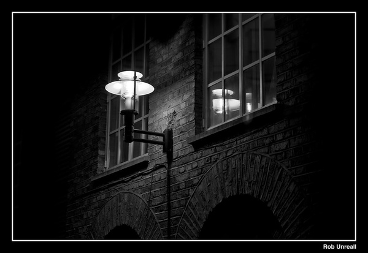

Jack the Ripper oli tunnetun sarjamurhaajan alias, joka eli 1880-luvun loppupuolella Lontoossa, Whitechapelissa. Tänä aikana Lontoossa asui valtavia määriä ihmisiä köyhyydessä tai huonossa elinoloissa. Näillä kaduilla, kujilla ja kulmilla seksityö oli monille pääsääntöinen tulonlähde. Jack kohdisti hyökkäyksensä pääsääntöisesti "yön naisiin", kenties pimeiden ympäristöjen ja yksityisyyden toivossa. Kenties motiivi oli henkilökohtainen. Rikollisuus ei ollut harvinaista, mutta tulevat tapahtumat ravisteli kansaa ja lehdistöä. Hänen uhrimäärästä ei ole varmuutta, mutta todennäköisesti se on 5-11 välillä. Todennäköisimmät uhrit:
ja tapahtumienkulut menevät seuraavasti:
 ruumis löytyi noin klo 03.40 perjantaiaamuna, 31.8.1888. Ruumiin löysivät muuan Robert Paul ja Charles Cross, ketkä olivat työmatkalla. Pimeässä ympäristössä miehet eivät olleet varmoja oliko kadun varella makaava nainen hengissä vai ei. Kiireisen aikataulun alaisena molemmat miehet päättivät jatkaa työmatkaansa, mutta ilmoittavat asian poliiseille heihin törmätessään. Onneksi paikalle saapui poliisi pian (noin 03.50), joka kutsui lääkärin. Lääkärin arvion mukaan naisen kuolinsyy oli ammottava viilto kaulassa, sekä useita pienempiä vatsassa. Arvion mukaan hän ei voinut olla kuolleena kovin pitkään (noin 30-60 min). Viimeisin partio liikkui kadulla noin klo 03.15 ja Nicholsin tuttava näki hänet hengissä klo 02.30. Jos aikajanaan on luottamista Charles ja Robert saapuivat paikalle vain minuutteja murhan tapahduttua.
ruumis löytyi reilu viikko myöhemmin asuntolan pihalta klo 6.00. Hänen kaulasa oli leikattu auki kahdella syvällä viillolla ja suolistoa revittu ruumiin vierelle. Myös osa elimistä oli poistettu osittain. Kaksi kampaa ja kankaanpalanen lojui ruumin vieressä. Ruumiinavaus totesi, että uhrilta oli irrotettu kaksi messinkisormusta vasemmasta kädestä. Mikä tekee Chapmanin murhasta mielenkiintoisen on tapahtumien kulku. Ruumiin arvioinut lääkäri uskoi hänen olleen kuolleena useita tunteja, kun taas tapahtumapaikan ohi kulkenut Elizabeth Long kertoi nähneensä Chapmanin hengissä klo 05.30. Longin mukaan mies oli sanonut: "Will you?" ja Chapman vastannut "Yes.". Takapihalle astunut John Richardson (noin klo 04.45) oli varma ettei ollut nähnyt ruumista silloin. Kukaan asuntolan asukkaista ei ollut kuullut mitään, vaikka monet olivat nukkuneet ikkunat auki sinä yönä.
löydettiin 30.9.1888 klo 01.00 kurkku leikattuna ja makaamassa omassa veressään. Israel Schwartz uskoi nähneensä Elizabethin ja miehen joka heitti naisen maahan lähellä murhapaikkaa klo. 00.45. Israel ei kuitenkaan päättänyt puuttua asiaan vaan jatkoi matkaansa. Hän saattaa olla harvojen joukossa joka näki murhaajan itsensä. Kolme varttia myöhemmin, noin kilometrin päässä murhapaikasta Catherine Eddowesin ruumis löydettiin aukiolta korva viillettynä, kaulu leikattuna, vatsa avattuna ja runneltuna. Hänen kohtu ja vasen munuainen oli poistettu. Murhien läheisyys herättää mahdollisuuden kaksoismurhasta, ja mikä mielenkiintoisinta kolme päivää ennen murhia poliiseille oli lähetetty kirje, joka luki seuraavasti:
Mielenkiintoisinta kirjeessä ovat lähettäjän antama alias ja maininta korvan leikkaamisesta ("Catherine Eddowesin ruumis löydettiin aukiolta korva viillettynä"). Päivä myöhemmin poliisille saapui toinen kirje joka luki seuraavasti: